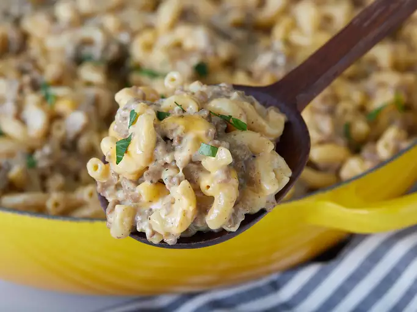

Cheese and Hamburger Macaroni

Homemade macaroni and beef version of Hamburger Helper — just as easy and
tastes so much better! You will need a large skillet with a tight fitting
lid.
Ingredients
- ½ pound lean ground beef, or more to taste
- ½ small onion, minced
- 1 teaspoon garlic powder
- 1 teaspoon onion powder
- salt and ground black pepper to taste
- 2 cups water
- 2 cups elbow macaroni
-
8 ounces reduced-fat processed cheese food (such as Velveeta®), cut
into small pieces
- 2 tablespoons reduced-fat sour cream, or more to taste
Steps
- Gather all ingredients.
-
Heat a large skillet over medium-high heat. Cook and stir ground beef,
onion, garlic powder, onion powder, salt, and black pepper in the hot
skillet until beef is browned and crumbly, 5 to 7 minutes; drain and
discard grease.
-
Increase heat to high. Add water to ground beef mixture in the skillet.
Cover and bring to a boil. Stir macaroni into boiling water-ground beef
mixture. Cover, lower heat to medium, and cook for 5 minutes. Stir,
cover, and continue cooking until macaroni is tender, about 5 minutes.
-
Stir processed cheese food into ground beef-macaroni mixture until
melted. Remove from heat; stir in sour cream.